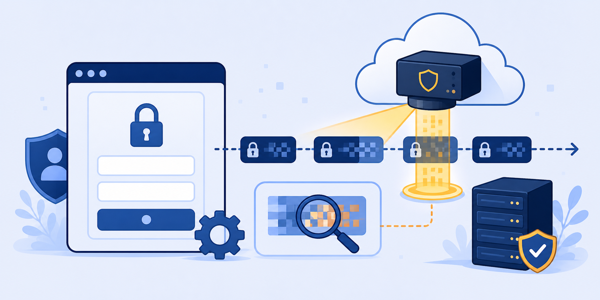

Lab 1: Securing Access to Internet
Scenario: SSL inspection is a hard prerequisite for Browser Isolation. Without it, Zscaler cannot redirect HTTPS traffic into an isolated container. In this lab you will review the existing SSL Inspection policy in the ZIA Admin Portal and confirm decryption is active by inspecting the certificate on a live HTTPS site.
Browser Isolation intercepts HTTPS sessions by acting as a man-in-the-middle proxy. It can only do this if SSL inspection is enabled — otherwise the encrypted payload is opaque to the Zscaler cloud and cannot be redirected.
- SSL inspection is described as a prerequisite for Browser Isolation. Why can't BI work on HTTPS traffic that is not being decrypted?
- The ZIA tenant has a "Zscaler Recommended Exemptions" SSL policy rule. What categories of traffic does this typically cover, and why is blanket SSL inspection a bad idea?
- You see a Zscaler Intermediate Root CA certificate on microsoft.com. What does this confirm about how traffic is flowing, and what would you see instead if SSL inspection were disabled?
Task 1.1: Review SSL Inspection Policy & Verify SSL Decryption
1 Log In to the ZIA Admin Portal
- On your laptop (or Client PC VM), open a browser and navigate to
https://admin.zscalerthree.net. - Log in with:
- Admin User ID:
<prefix>-ADMIN@thezerotrustexchange.com - Session Password: <Session Password>
- Admin User ID:
- Go to Policy › SSL Inspection to view the SSL Inspection Policy rules.
2 Review SSL Policies and Verify Decryption
- Scroll through the policy rules. Note the Zscaler Recommended Exemptions rule (Do Not Inspect) and No Inspect Finance & Health rule.
- Click the eye icon on any policy to explore its settings.
- On the Client PC VM, open a new browser window and navigate to
https://www.microsoft.com. - Click the padlock icon in the address bar and select Certificate or More information › View certificate.
- Verify that the certificate is issued by Zscaler Intermediate Root CA (zscalerthree.net).
Note: Viewing the certificate varies by browser. In Chrome: padlock › Connection is secure › Certificate is valid. In Firefox: padlock › More information › View Certificate. Look for "Issued By: Zscaler Intermediate Root CA."
